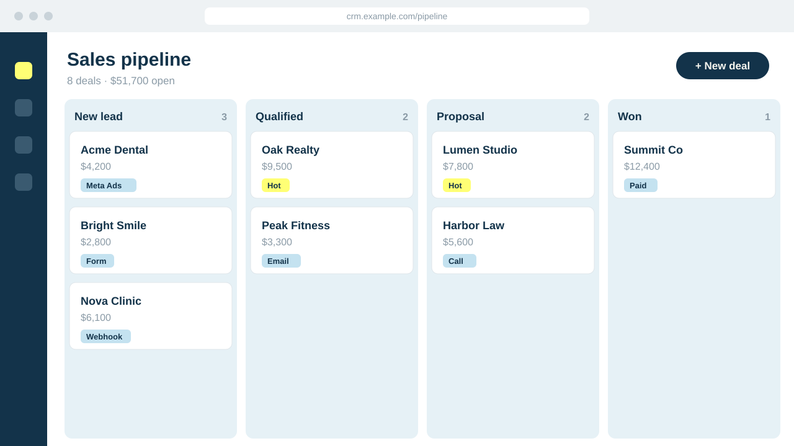
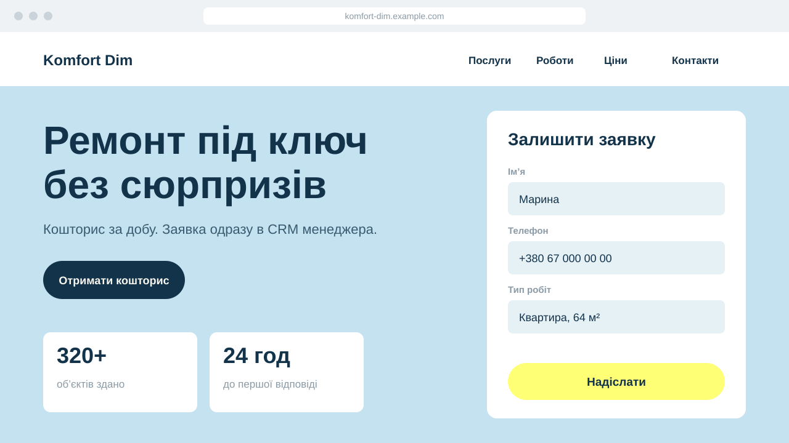
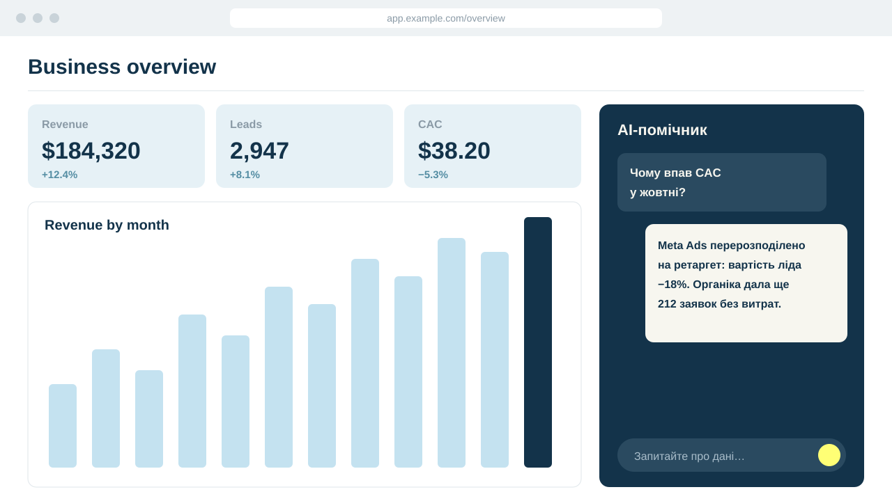
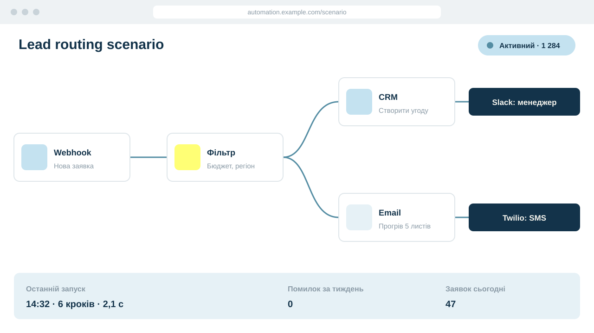

Веб та розробка
Сайти, вебінтерфейси, окремі інструменти, робота з наявними сайтами.
- Next.js
- JavaScript
- Node.js
- GitHub
- Vercel
- Railway
- Tilda
Олена Шепель · AI, автоматизація, веб · власниця цього кота
Він керівник відділу автоматизації і зараз дуже зайнятий. Будь ласка, просто пройдіть повз.
Примітка кота: затвердив усі шість. Неохоче.
Сайти, вебінтерфейси, окремі інструменти, робота з наявними сайтами.
AI у бізнес-процесах: класифікація, аналіз, відповіді, агенти.

З'єдную сервіси, CRM, сайти й форми. Заявки, сповіщення та follow-up працюють без ручної роботи.
Збір, передача й обробка даних, маркетингова атрибуція.
Анкети, заявки й оплати, підключені до процесів.
Лідогенерація, воронки, реклама та email-процеси.
Примітка кота: участі не брав. Але стежив.

CRM, інтеграції, автоматизація записів, маркетингові дані та взаємодія між сервісами.
Кіт: інтеграцій багато. Кіт один.

Розробка сайту, налаштування KeepinCRM, передача заявок через webhook, створення угод і сповіщення менеджера.
Кіт: заявка дійшла. Кіт перевірив.

Власний продукт для роботи з даними, імпортами, аналітикою та AI-помічником.
Кіт: цифри зійшлись. Кіт не здивований.

Робота з CRM, сайтами, формами, інтеграціями, маркетинговими процесами та автоматизаціями.
Кіт: усе працює саме. Підозріло.
Примітка кота: якщо задачу можна вирішити простіше, її вирішать простіше. Кіт за.
Що зараз не працює, де виникають затримки, що потрібно змінити.
Визначаю логіку процесу, потрібні сервіси та спосіб взаємодії між ними.
Створюю, інтегрую, тестую.
Пояснюю, як усе працює, і за потреби супроводжую.
Примітка кота: годує вчасно. Автоматизує все, крім мене.
Працюю на перетині AI, автоматизації, інтеграцій, даних і веброзробки. Підбираю інструменти під задачу, а не навпаки. За потреби пояснюю складне «на пальцях».
Перш ніж щось будувати, розбираюсь, як у вас насправді ведеться робота. Поєдную технічне налаштування з розумінням бізнес-процесів. Постійно досліджую нові інструменти й перевіряю їх на практиці.
Спікер, виступаю з лекціями про AI для широкої аудиторії: як він влаштований, де помиляється і чому йому не варто вірити на слово.
Навіть якщо ви не знаєте, як вона називається. Кіт теж не знав.
Обговорити проєкт